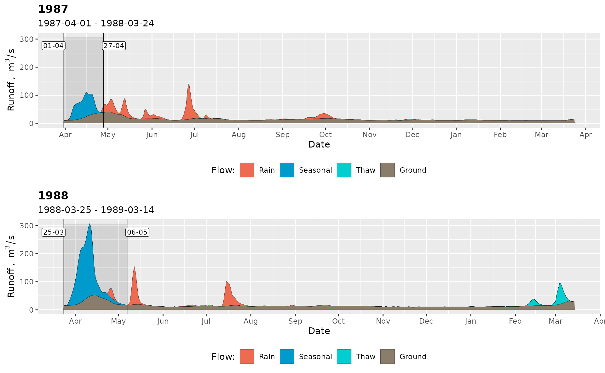
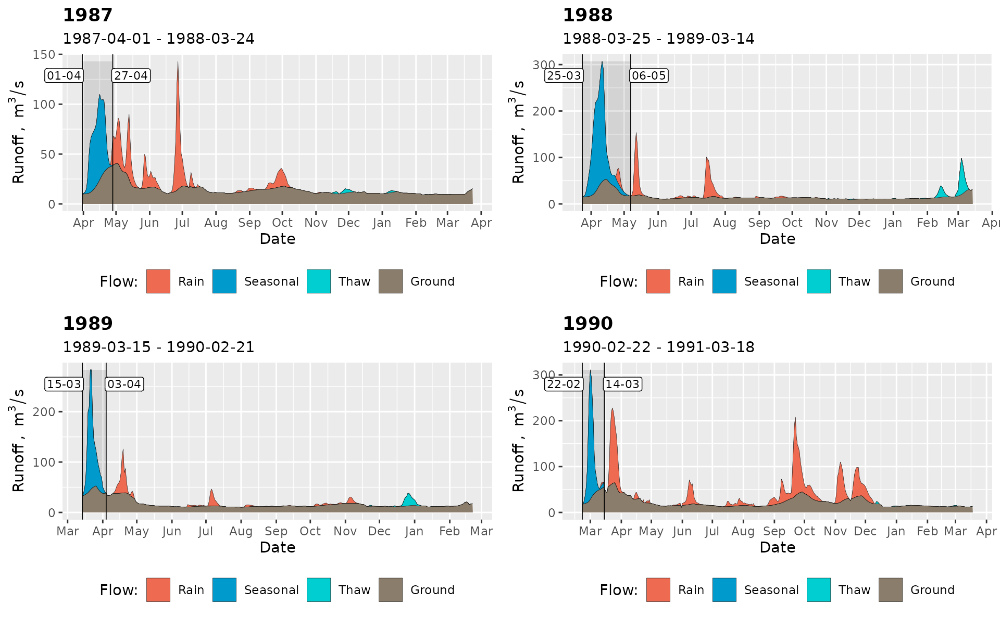
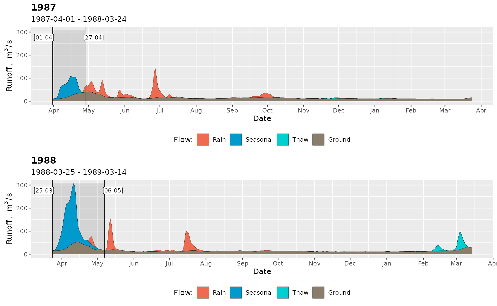
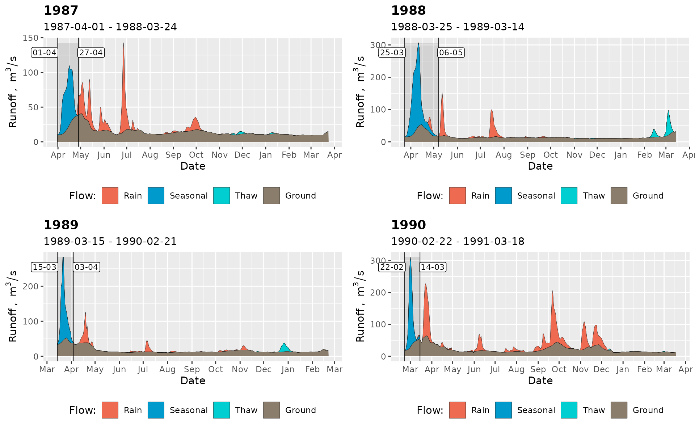
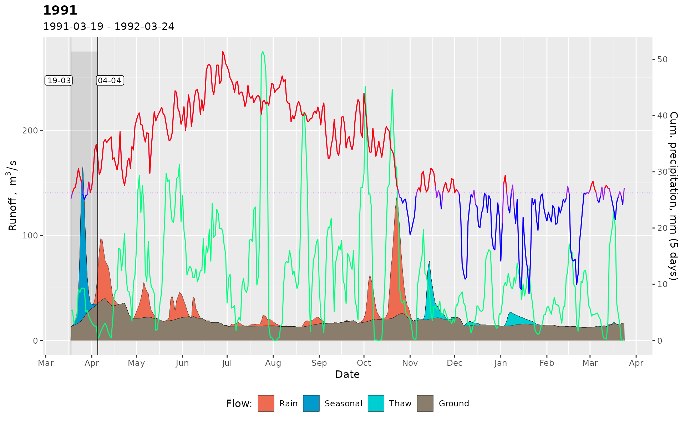
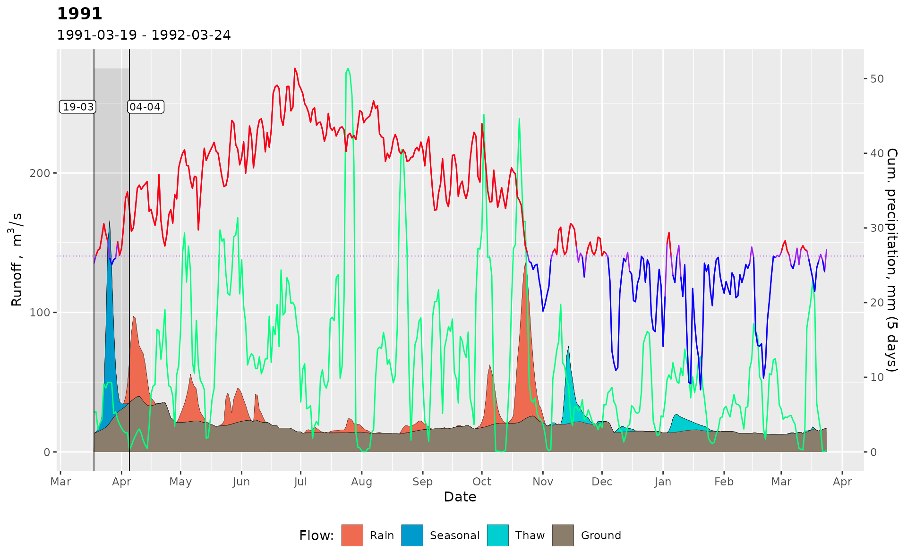

The function plots river hydrograph by filling the different flow types using colors. Matrix layouts can be used if multiple plots are needed. Temperature and precipitation can be overlaid.
Usage
gr_plot_sep(
df,
years = NULL,
layout = as.matrix(1),
pagebreak = FALSE,
temp = FALSE,
prec = FALSE,
span = 5
)Arguments
- df
data.frameof hydrograph separation as produced bygr_separate().- years
Integer vector of years to be plotted.
- layout
matrixthat encodes the order of plotting.- pagebreak
Logical. Whether to break page between plots (used by
gr_report()). Defaults toFALSE.- temp
Boolean. Add temperature curve to the plot? Defaults to
FALSE. If bothtemp = TRUEandprec = TRUE, then the axis is drawn for precipitation.- prec
Boolean. Add precipitation curve to the plot? Defaults to
FALSE. If bothtemp = TRUEandprec = TRUE, then the axis is drawn for precipitation.- span
Integer number of days to accumulate precipitation for plotting.
Examples
library(grwat)
data(spas) # example Spas-Zagorye data is included with grwat package
# separate
sep = gr_separate(spas, params = gr_get_params(reg = 'Midplain'))
#> grwat: data frame is correct
#> grwat: parameters list and types are OK
# One year
gr_plot_sep(sep, 1978)
#> Warning: Removed 2 rows containing missing values (position_stack).
 # Two years
gr_plot_sep(sep, c(1978, 1989))
#> Warning: Removed 2 rows containing missing values (position_stack).
# Two years
gr_plot_sep(sep, c(1978, 1989))
#> Warning: Removed 2 rows containing missing values (position_stack).
 #> Warning: Removed 1 rows containing missing values (position_stack).
# Four years in a matrix layout
gr_plot_sep(sep, 1988:1991, layout = matrix(1:4, nrow = 2, byrow = TRUE))
#> Warning: Removed 1 rows containing missing values (position_stack).
#> Warning: Removed 1 rows containing missing values (position_stack).

# Add temperature
gr_plot_sep(sep, 1991, temp = TRUE)
#> Warning: Removed 1 rows containing missing values (position_stack).

# Add precipitation
gr_plot_sep(sep, 1991, prec = TRUE)
#> Warning: Removed 1 rows containing missing values (position_stack).
#> Warning: Removed 1 rows containing missing values (position_stack).
# Four years in a matrix layout
gr_plot_sep(sep, 1988:1991, layout = matrix(1:4, nrow = 2, byrow = TRUE))
#> Warning: Removed 1 rows containing missing values (position_stack).
#> Warning: Removed 1 rows containing missing values (position_stack).

# Add temperature
gr_plot_sep(sep, 1991, temp = TRUE)
#> Warning: Removed 1 rows containing missing values (position_stack).

# Add precipitation
gr_plot_sep(sep, 1991, prec = TRUE)
#> Warning: Removed 1 rows containing missing values (position_stack).
 # Increase cumulative sum span for precipitation
gr_plot_sep(sep, 1991, prec = TRUE, span = 10)
#> Warning: Removed 1 rows containing missing values (position_stack).
# Add both
gr_plot_sep(sep, 1991, temp = TRUE, prec = TRUE)
#> Warning: Removed 1 rows containing missing values (position_stack).

# Increase cumulative sum span for precipitation
gr_plot_sep(sep, 1991, prec = TRUE, span = 10)
#> Warning: Removed 1 rows containing missing values (position_stack).
# Add both
gr_plot_sep(sep, 1991, temp = TRUE, prec = TRUE)
#> Warning: Removed 1 rows containing missing values (position_stack).
